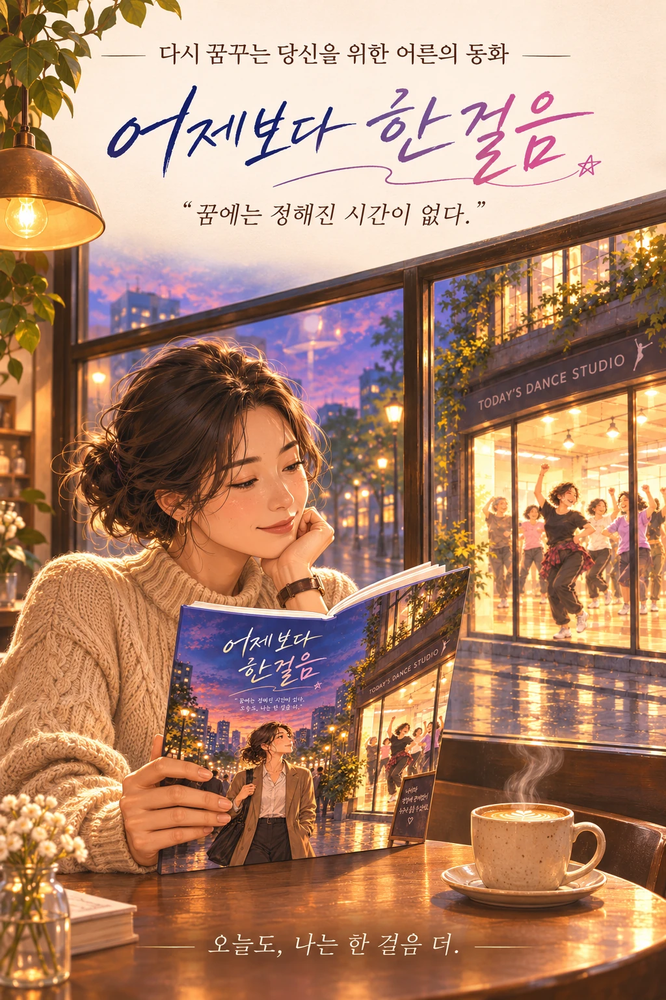

2018.08 — 2019.08
주식회사 플리토 FLITTO
번역 PM · 매니저
일본어 번역 및 검수, 번역 프로젝트 관리
안녕하세요, 김해림입니다.
일본어 번역과 번역 프로젝트 관리 경험을 바탕으로 기술 및 영상 콘텐츠를 다뤄왔습니다. 최근에는 AI 도구를 활용한 이미지와 영상 제작으로 시각적 표현의 가능성을 탐색하고 있습니다.
언어와 프로젝트를 연결해 온 경험
번역 PM · 매니저
일본어 번역 및 검수, 번역 프로젝트 관리
외국 특허 관리 · 사원
특허청 문서 번역 및 해외대리인 관리
단기 계약
대림산업 신사업 컨설팅 · 시장조사 및 보고서 작성
사원
외국 바이어 관리, 계약서 작성, 오더 및 선적 관리
※ 경력 내용은 제공해 주신 이력 메모를 바탕으로 정리했습니다.
일본문학과 경제학을 공부한 여정
박사과정 수료 · 일본문학
국제일본학 석사
석사과정 · 일본문학
경제학과
AI 도구로 만든 영상, 동화책, 이미지
AI를 활용해 제작한 애니메이션 영상 작업입니다. 썸네일을 누르면 영상을 재생할 수 있어요.

일상 속 작은 도전과 새로운 시작을 담은 동화책입니다. 표지를 누르면 전체 페이지를 읽을 수 있어요.
작품을 선택하면 크게 볼 수 있습니다. 《어제보다 한 걸음》은 동화책 전체를 읽을 수 있어요.
협업 및 채용 관련 문의를 기다립니다.